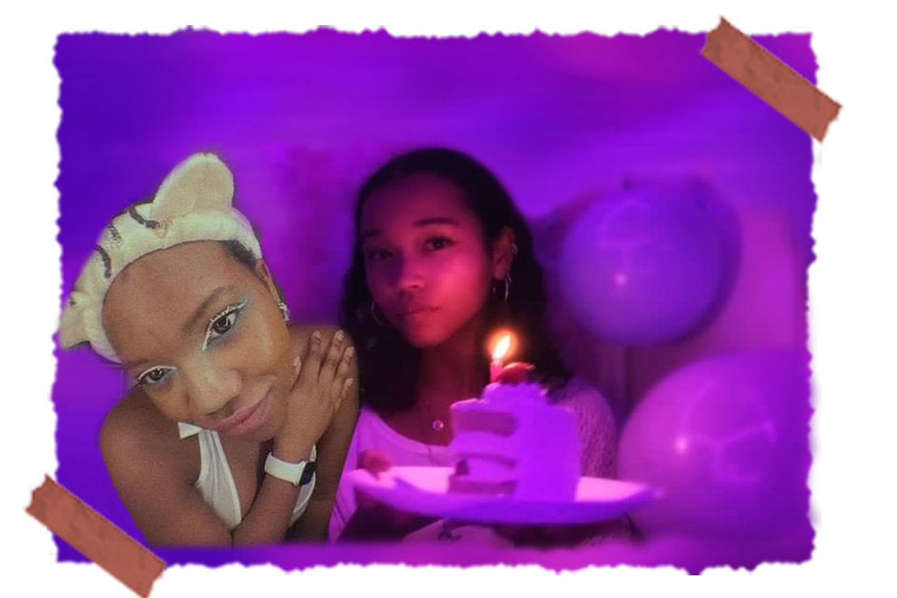
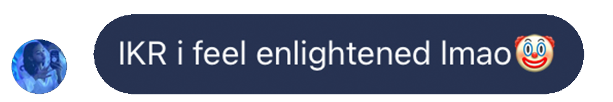
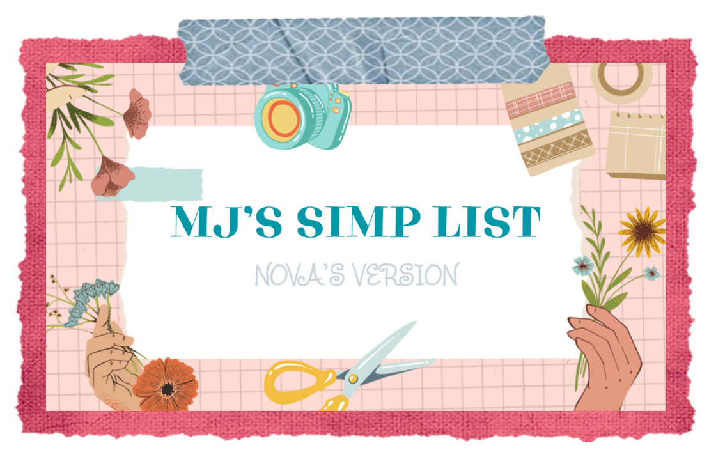
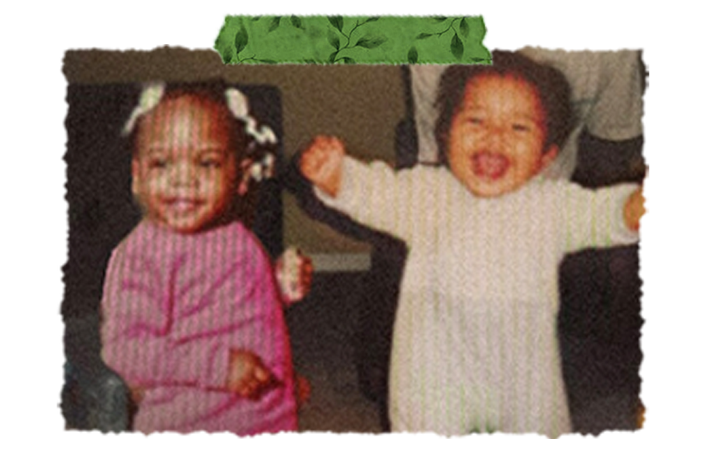
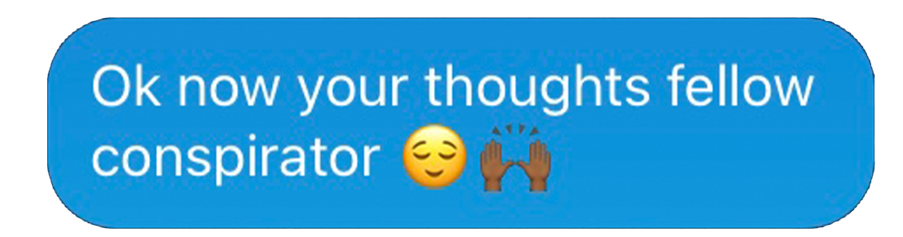
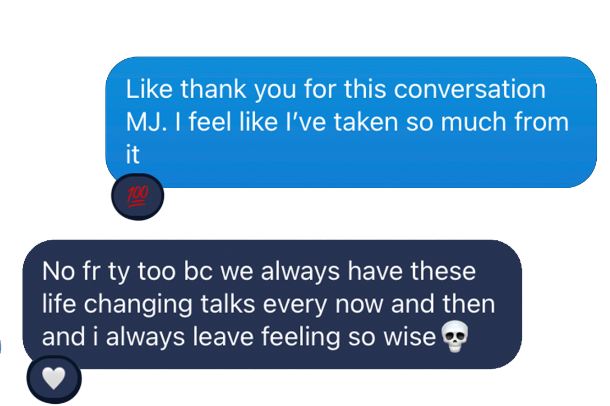

2020-2024: Through The Distance
We had built up such a strong bond in person, but inevitably the distance put a slight strain on our relationship. Despite that, I’m so grateful social media has allowed us to maintain our connection. I remember right after I left Japan I was expecting us to fall out as friendships usually do, but we simply never did. We didn't just watch instagram stories we followed up and replied, we collaborated on multiple deep dive analyses for tv shows and movies, you participated in videos on my youtube channel, and you even officiated my wedding (as cringey as it was). We may not have talked everyday, but you showed up when it counted. You were still my go to when I started developing feelings for a new crush, you were still there engaging with me in deep political discusissons only this time with a change of opinion and growth of mindset, and when it came time for college you locked right back in as my academic scholar proofreading my college essay. Even as we grew as people, you remained someone I could consistently count on.
previous page
next page